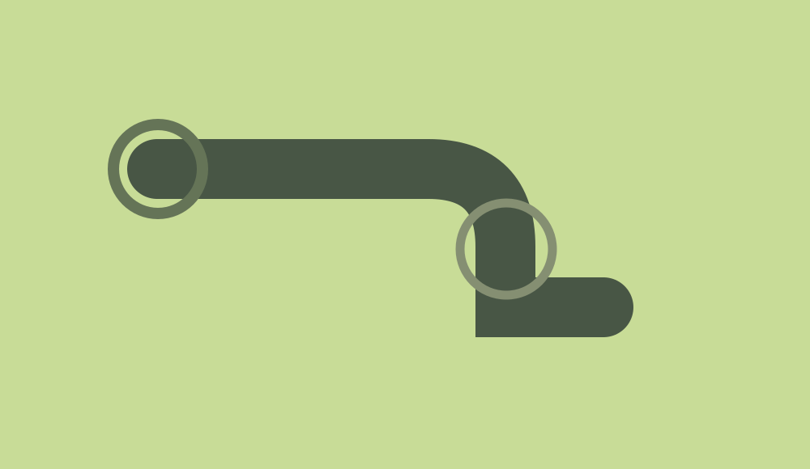
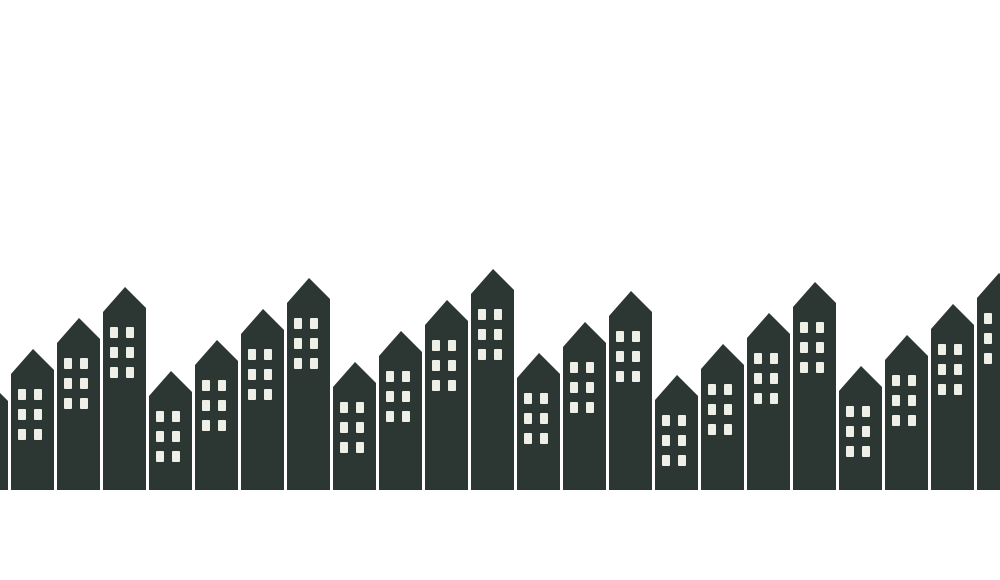
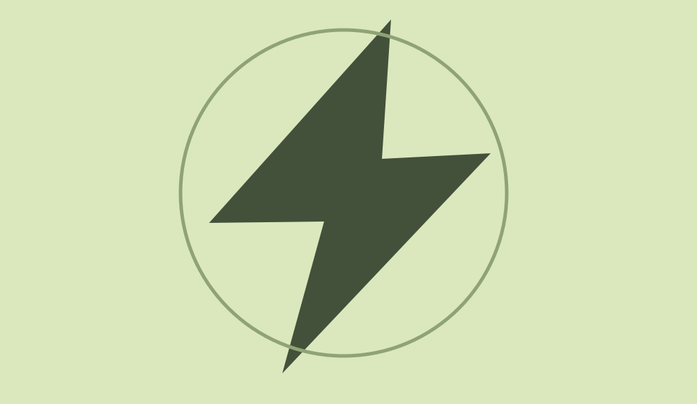
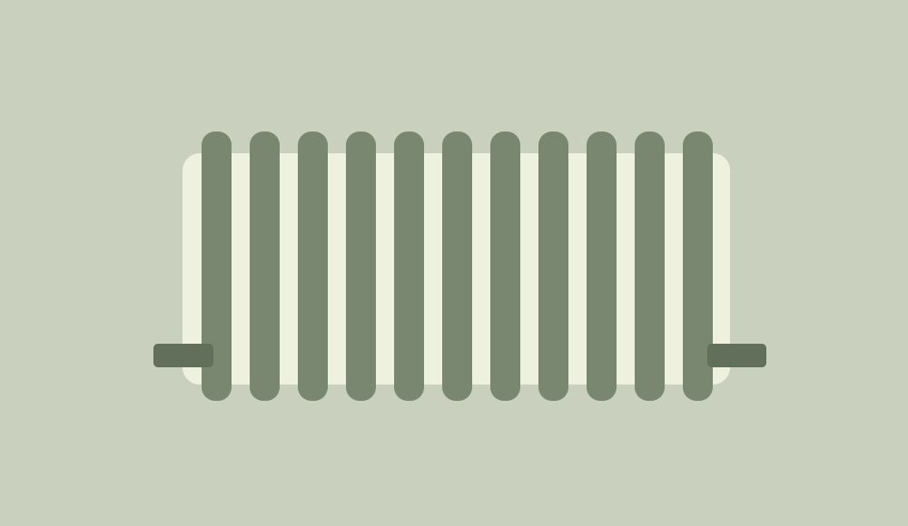

آب و لوله
لولهکشی و نشتی
عیبیابی شیرآلات، رفع نشتی و تعویض اتصالات.

رشتهی تخصصی را انتخاب کن و مشکل را برای تیم بنویس.

عیبیابی شیرآلات، رفع نشتی و تعویض اتصالات.

بررسی کلید، پریز، فیوز و مدارهای روشنایی.

تنظیم سیستم گرمایش و سرویس تجهیزات فصلی.
نوع خرابی و زمان مناسب بازدید را مینویسی.
اطلاعات لازم و هزینهی بازدید پیش از کار روشن میشود.
تعمیرکار قطعات و راهحل را با تو مرور میکند.
با انتخاب محل خرابی، ببین برای بررسی اولیه چه اطلاعاتی به کار میآید.
محل دقیق، زمان شروع مشکل و نشانههای ظاهری را یادداشت کن.
طبقه، دسترسی به تجهیزات و زمان حضور مدیر ساختمان را بنویس.
نوع سیستم و اثر مشکل بر واحدهای دیگر را شرح بده.
محل خرابی، نشانههای آن و زمان مناسب برای بازدید را وارد کن.
فرم پایین صفحه را تکمیل کن. یک فایل متنی از انتخاب و توضیحاتت دریافت میکنی.
این قالب نمایشی است. با تکمیل فرم، خلاصهی درخواستت را به صورت فایل متنی دریافت میکنی.
 انتخاب این قالب
انتخاب این قالب